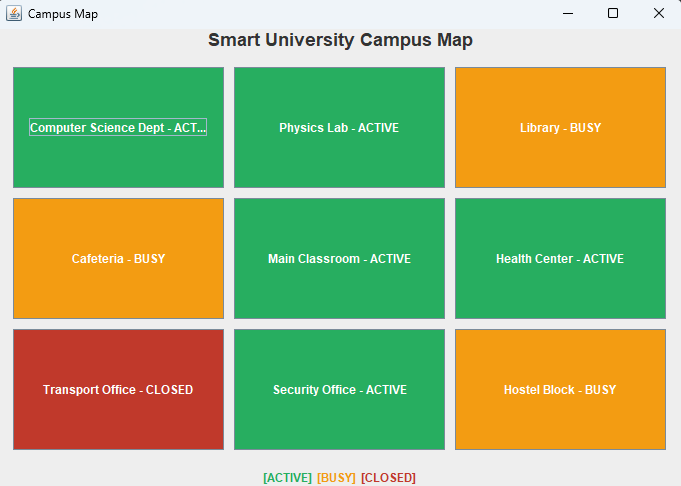

Concept / 01
Object-oriented structure
Organising related responsibilities into classes and using encapsulation to keep the design manageable.
Projects / Smart Campus
Case study / 01
A Semester 2 desktop application designed to bring common campus management tasks into one interface — and practise object-oriented programming through a tangible project.
Overview
The Swing desktop app provides an admin-oriented dashboard for managing students, courses, and facilities. A campus map view gives buildings a status such as active, busy, or closed, making the interface more visual than a list of records alone.


What I practised
Organising related responsibilities into classes and using encapsulation to keep the design manageable.
Practising inheritance, polymorphism, and generics as tools for reducing duplication and expressing shared behavior.
Connecting interface actions to application functionality through Java Swing.